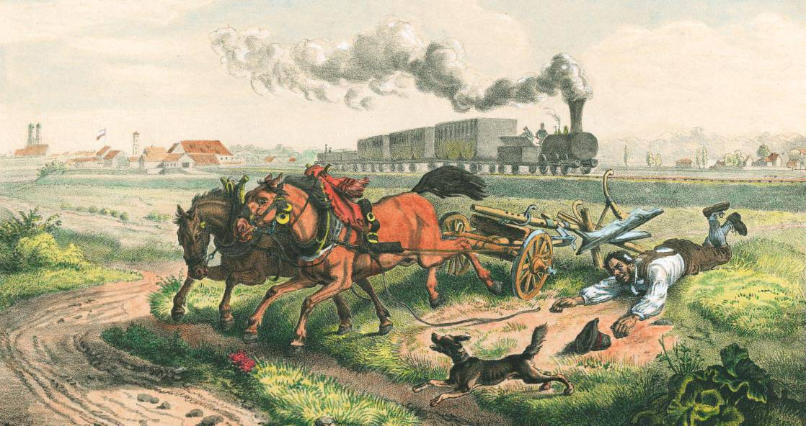

1. Deutschland vor der Eisenbahn
Um 1830 reisten Menschen meistens zu Fuß, mit Pferdekutschen oder auf Flüssen.
Reisen waren langsam, teuer und beschwerlich.
Mit 5 Bausteinen erzählst du deine Geschichte der Industrialisierung in Deutschland.
Wir zeigen dir, wie.
Um 1830 reisten Menschen meistens zu Fuß, mit Pferdekutschen oder auf Flüssen.
Reisen waren langsam, teuer und beschwerlich.

1. Beschreibe die Veränderungen durch die Eisenbahn anhand der Quellen.
2. Welche wirtschaftlichen Folgen hatte der Schienenstrecken-Ausbau?
3. Nenne die Schattenseiten der Industrialisierung.


Bitte informiere jetzt deinen Lehrer, dass du mit den Aufgaben fertig bist.
Die Auswirkungen der Industrialisierung waren offensichtlich. Beim Bau von neuen Fabriken hatten Anwohner eine einmonatige Einspruchfrist, die aber meist ungenutzt blieb. Schäden, die durch industrielle Produktionen oder Bergbau entstanden, konnten eingeklagt werden, doch die wenigsten Betroffenen hatten Kenntnis davon oder besaßen genügend Geld, um ihre Ansprüche geltend zu machen. Ende des 19. Jahrhunderts setzte langsam ein Bewusstsein für den Naturschutz ein, der aber kein Umweltschutz im modernen Sinn war, sondern "unberührte Natur" inmitten der Industrielandschaft wahren sollte.

Analysiere, ob es eine stärkere Kontrolle der Abwassereinleitung geben sollte.
2. Welche wirtschaftlichen Folgen hatte der Schienenstrecken-Ausbau?
3. Nenne die Schattenseiten der Industrialisierung.
Ein widerlicher Anblick bot sich am Himmelfahrtstage den zahlreichen Spaziergängern dar ... In kalkmilchartiger Färbung floss das Wasser der Nahe langsam dahin ... und Tausende und Abertausende toter und sterbender Fische, darunter Hechte und Forellen ... trieben in der Flut. Viele Leute machten sich diesen Umstand zunutze und holten die Tiere heraus, um sie zum Verspeisen mit nach Hause zu nehmen - ein nicht unbedenkliches Unterfangen, war es doch dem Urteilsfähigen sofort klar, dass die armen Tiere nur einer Vergiftung zum Opfer gefallen sein konnten ... Die Angelegenheit ist der Staatsanwaltschaft zur näheren Untersuchung übergeben. Hoffentlich gelingt es dieser, hier endlich einmal Wandel zu schaffen. Ist doch der Gedanke nicht anzuweisen, dass auch die nicht eingegangenen Fische infolge des Kalkwassers krank und der menschlichen Gesundheit leicht von Schaden sein können.
Die Fischereipacht bringt in der Stadt jährlich zirka 200 Mark ein. Die Firma Caesar & Ewald zahlt jährlich ... allein an Arbeitslöhnen durchschnittlich 35000 Mark. Die Firma muss den Betrieb einstellen, wenn sie ihre Abwässer nicht mehr loswird ... Wollen wir aber ... der ärmeren Bevölkerung Unterhalt verschaffen, dieselbe von dem Auswandern schützen und damit den Verkehr und die Geschäfte heben, so ist es nicht zu umgehen, auf die Industrie Rücksicht und die Unannehmlichkeiten, welche sie mit sich bringt, mit in Kauf zu nehmen.
Bitte informiere jetzt deinen Lehrer, dass du mit den Aufgaben fertig bist.
Die Industrialisierung brachte viele Veränderungen.
Der steigende Kohleverbrauch führte aber auch zu Umweltproblemen.

Du hast alle Aufgaben gemeistert. Bitte informiere jetzt deinen Lehrer, dass du mit allen Aufgaben fertig bist.